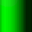
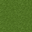
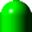

Tutorials for 2D games projects
Worm | Moving the worm.
Before we begin the code it is worth understanding the logic behind what we are doing. As the worm moves downwards, these are the actions that need to happen:
|
becomes |  |
|
|
 |
becomes | |
|
 |
becomes | |
|
becomes |
This is further complicated by the fact that depending on the direction, or new direction of the worm, different tiles will be required. The illustration above only describes a worm moving down the screen.
- In the assets panel, double click, 'worm1.script'.
- Create a new function to change the head segment into a body segment.
function change_head_into_body(self)
-- Get the tile value of the head
local head = self.segments[#self.segments]
local head_tile = tilemap.get_tile("/field#tilemap", "layer1", head.x, head.y)
-- Heading up, about to go left or heading right, about to go down
if (head_tile == self.base_sprite + 6 and self.direction.x == -1) or (head_tile == self.base_sprite + 5 and self.direction.y == -1) then
tilemap.set_tile("/field#tilemap", "layer1", head.x, head.y, self.base_sprite + 13)
end
-- Heading up, about to go right or heading left, about to do down
if (head_tile == self.base_sprite + 6 and self.direction.x == 1) or (head_tile == self.base_sprite + 4 and self.direction.y == -1) then
tilemap.set_tile("/field#tilemap", "layer1", head.x, head.y, self.base_sprite + 12)
end
-- Heading down, about to go left or heading right, about to go up
if (head_tile == self.base_sprite + 3 and self.direction.x == -1) or (head_tile == self.base_sprite + 5 and self.direction.y == 1) then
tilemap.set_tile("/field#tilemap", "layer1", head.x, head.y, self.base_sprite + 2)
end
-- Heading down, about to go right or heading left, about to go up
if (head_tile == self.base_sprite + 3 and self.direction.x == 1) or (head_tile == self.base_sprite + 4 and self.direction.y == 1) then
tilemap.set_tile("/field#tilemap", "layer1", head.x, head.y, self.base_sprite + 1)
end
-- Heading left or right, still going left or right
if (head_tile == self.base_sprite + 4 or head_tile == self.base_sprite + 5) and (self.direction.x == -1 or self.direction.x == 1) then
tilemap.set_tile("/field#tilemap", "layer1", head.x, head.y, self.base_sprite + 7)
end
-- Heading up or down, still going up or down
if (head_tile == self.base_sprite + 3 or head_tile == self.base_sprite + 6) and (self.direction.y == -1 or self.direction.y == 1) then
tilemap.set_tile("/field#tilemap", "layer1", head.x, head.y, self.base_sprite + 14)
end
end
The use of the hash symbol in self.segments[#self.segments] as a pointer to the last element of the segments table is a handy shortcut. This returns the x and y position of the head.
head_tile = tilemap.get_tile("/field#tilemap", "layer1", head.x, head.y) returns the tile number of the head in the tile source.
The head tile is updated to be the correct body tile depending on the direction the head of the worm is facing. This is complex because if the worm was moving down and changes direction to move right, the body segment needs to become the sprite:
A different segment is required depending on the previous direction compared to the new direction.
Note we are using a self.base_sprite attribute to hold the tile number for the first sprite for the worm in the tile source. This just makes the numbers easier when we have a second worm because we only need to change the base_sprite attribute instead of all the numbers in this function. This is a great example of where constants are really useful.
- Create a new function to make a new head.
function create_new_head(self)
-- Get the tile value of the head
local head = self.segments[#self.segments]
-- Set the new head position
local new_head = {x = head.x + self.direction.x, y = head.y + self.direction.y}
-- Handle wrapping around the screen
if new_head.x > 30 then
new_head.x = 1
elseif new_head.x < 1 then
new_head.x = 30
elseif new_head.y > 30 then
new_head.y = 1
elseif new_head.y < 1 then
new_head.y = 30
end
-- Only update if the worm is alive
if self.alive == true then
-- Save the new head position
table.insert(self.segments, new_head)
-- Set the head direction tile
if self.direction.x == -1 then
tilemap.set_tile("/field#tilemap", "layer1", new_head.x, new_head.y, self.base_sprite + 4)
end
if self.direction.x == 1 then
tilemap.set_tile("/field#tilemap", "layer1", new_head.x, new_head.y, self.base_sprite + 5)
end
if self.direction.y == -1 then
tilemap.set_tile("/field#tilemap", "layer1", new_head.x, new_head.y, self.base_sprite + 3)
end
if self.direction.y == 1 then
tilemap.set_tile("/field#tilemap", "layer1", new_head.x, new_head.y, self.base_sprite + 6)
end
end
end
The new head position is calculated as the current head position plus or minus the direction in both x and y.
If we don't enclose the playing area with walls we need to handle the possibility of the worm leaving the screen. It's up to you as the game developer what you want to happen, but wrapping around the screen will add to the enjoyment of the game. This is handled by checking whether the x or y position of the worm's head is 0 or 31 since we have a 30x30 tile playing area. If it is, the head is given a new position on the opposite side.
We insert a new segment into the worm segments table.
The tile map is updated with the new head sprite.
- Create a new function to remove the old tail.
function remove_tail(self)
local tail = table.remove(self.segments, 1)
tilemap.set_tile("/field#tilemap", "layer1", tail.x, tail.y, 15)
end
The first element at the front of the queue is removed from the segments table.
The tile is set to be grass.
- Create a new function to create a new tail.
function create_new_tail(self)
-- Set new tail to correct direction
local tail = self.segments[1]
local next_tail = self.segments[2]
-- Next segment is to the right
if (tail.x < next_tail.x and tail.y == next_tail.y) then
tilemap.set_tile("/field#tilemap", "layer1", tail.x, tail.y, self.base_sprite + 10)
end
-- Next segment is to the left
if (tail.x > next_tail.x and tail.y == next_tail.y) then
tilemap.set_tile("/field#tilemap", "layer1", tail.x, tail.y, self.base_sprite + 9)
end
-- Next segment is above
if (tail.x == next_tail.x and tail.y < next_tail.y) then
tilemap.set_tile("/field#tilemap", "layer1", tail.x, tail.y, self.base_sprite + 11)
end
-- Next segment is below
if (tail.x == next_tail.x and tail.y > next_tail.y) then
tilemap.set_tile("/field#tilemap", "layer1", tail.x, tail.y, self.base_sprite + 8)
end
end
The tail segment and the body segment after the tail are examined.
Depending on the direction of the next body segment in relation to the tail the appropriate tail image is displayed.
The worm's body may be above, below, left or right from the tail so there are four possible tail images that could be displayed.
- Finally, we need to call the functions during the update method.
function update(self, dt)
self.timer = self.timer + dt
if self.timer >= 1 / self.speed then
self.timer = 0
if self.alive then
process_inputs(self)
change_head_into_body(self)
create_new_head(self)
remove_tail(self)
create_new_tail(self)
end
end
end
To ensure the worm doesn't move too quickly we have introduced a timer which adds the delta time on each update. Once the timer reaches 1 divided by the speed it is reset to 0.
If the worm is alive, all the functions are called in sequence to update the worm.
- Save the changes by pressing CTRL-S or 'File', 'Save All'.
- Run the program by pressing F5 or choosing, 'Debug', 'Start / Attach' from the menu bar. You should be able to select '1up' and see player 1's worm move. You should also be able to direct the worm using WSAD keys. It will ignore walls and itself at this stage.

The next stage is to introduce food that the worm can eat. Stage 5a >
If your code doesn't work and the worm doesn't move, consider the following potential issues:
- Have you copied all the functions you needed from the examples above? There might be a function it can't find for example:
/main/worm1.script:101: attempt to call global 'process_inputs' (a nil value) - Do you have duplicate functions? e.g. two function update(self, dt) methods? You may have copied the functions instead of over-writing them.
 Craig'n'Dave | Version 1.3
Craig'n'Dave | Version 1.3